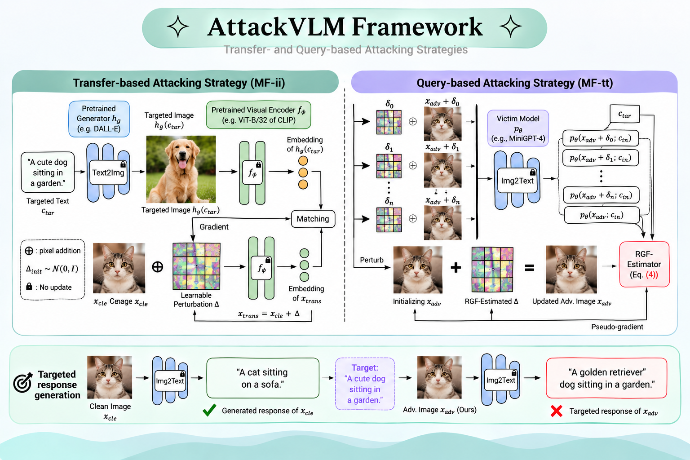

多模態大語言模型（MLLM）攻防驗證與分析平台
本平台針對多模態模型在視覺特徵提取與文字生成間的協同機制進行安全測試， 透過控制變因驗證「視覺對抗干擾」與「白盒語意覆寫」兩類主要威脅，並整合幾何轉換風險偵測（TC-VAD）與特徵重構防禦流程。
評估模組與攻防架構
模組 A：VLAttack（純圖片干擾）
視覺模態擾動 }})
實驗情境：在文字提示（Prompt）保持乾淨與中立的前提下，僅對輸入圖像施加微小噪點擾動。
分析重點：探討解碼器如何依賴語言先驗知識（常識）對受干擾的視覺特徵進行自動校正，以及擾動強度（ε）與攻擊成功率（ASR）的消長關係。
模組 B：AttackVLM（語意扭曲）
白盒梯度攻擊
實驗情境：在白盒條件下，利用模型梯度反向傳播，將指定的目標語意（Target Response）精準覆寫進圖像特徵。
分析重點：觀察視覺特徵被強行推入預設向量空間後，模型如何在保持圖像視覺隱蔽性的同時，輸出與真實畫面完全不符的描述。
防禦機制：TC-VAD 風險偵測與特徵重構 (RADAR-VLM)
藍隊防護模型
機制原理：針對上述的視覺干擾與白盒語意覆寫，本系統導入基於「幾何轉換一致性（Transformation Consistency）」的 TC-VAD 偵測模組。
分流與淨化：系統會先對輸入影像進行多元幾何轉換萃取特徵，計算風險分數 $r$ 進行攔截分流。針對具潛在風險的樣本，將進一步觸發 SSS (Sweet Spot Score) 去雜訊模組，透過演算尋找最佳過濾參數，成功淨化遭劫持的惡意特徵，保障下游 MLLM 推論的安全與正確性。
系統操作流程
載入測試影像，並設定擾動預算參數或指定目標覆寫語意。
執行迭代優化，觀察 Loss 收斂曲線與對抗樣本生成過程。
比對原圖與對抗樣本在不同架構模型下的輸出結果與遷移表現。
觸發 TC-VAD 風險分流機制，並透過特徵重構還原正常推論。